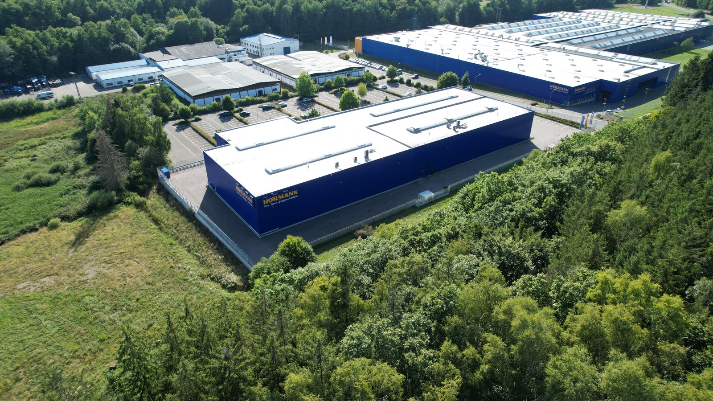

Linkes Auge
Drohnenflüge & FPV
Durch Hallen, Fenster und Menschenmengen: Imagefilme, Events und Sport aus Pilotensicht. Ein einziger Flug, der euren ganzen Ort erzählt.


FPV-Drohnenfilme aus dem Saarland
Direkt zu den Filmen ↓Durch Hallen, Fenster, Stadien und Menschenmengen – so nah dran, wie keine andere Kamera kommt. FPV-Drohnenfilme aus dem Saarland – und die Website, auf der euer Film zum Erlebnis wird.
ZWEI AUGEN · EIN FALKE
Ein Auge fliegt mit der FPV-Drohne durch eure Halle. Das andere baut eure Website. Beides aus einer Hand – aus dem Saarland.
Linkes Auge
Durch Hallen, Fenster und Menschenmengen: Imagefilme, Events und Sport aus Pilotensicht. Ein einziger Flug, der euren ganzen Ort erzählt.

Rechtes Auge
Websites, die man nicht wegscrollt: mit Geschichte, echten Bildern und Spielen zum Mitmachen. Animiert, auf dem Handy perfekt und für jeden Betrieb komplett eigen.
Wir übernehmen alles: Domain, Hosting, Wartung, Google & KIBeide Augen zusammen: Wir filmen euren Betrieb und bauen die Website, auf der der Film zum Erlebnis wird. Beides live ansehen ↓Film + Website anfragen →
Durchflug 1 von 3
Scrollt weiter – und fliegt selbst vom Balkon bis durch den Eingang.
Wo andere Drohnen umdrehen, fängt FPV erst an: durch Türen, Fenster und Gänge.
Ein Flug erzählt euren ganzen Ort. Genau das bleibt bei Kunden hängen.
So einen Flug anfragenZieh den Regler
Eine normale Drohne zeigt euer Gebäude von oben. Eine FPV-Drohne fliegt hinein. Beides am selben Ort: Möbel Martin, Saarbrücken.
Ruhige Übersicht aus 40 bis 120 Metern. Perfekt für Lage, Größe und Umgebung.
Fliegt durch Türen, über Rolltreppen, zwischen Menschen. Zeigt, wie sich euer Ort anfühlt. Wir machen beides – oft im selben Dreh.
Probiert es selbst
Zieht mit der Maus an den Sticks – oder fliegt mit W A S D und den Pfeiltasten. Linker Stick hoch = Gas, runter = bremsen. So fühlt sich FPV an.Beide Daumen auf die Sticks: links hoch = Gas, rechts = kippen und nicken. So fühlt sich FPV an.
Wählt einen Flug Antippen zum Abspielen
Wäscherei · Heißmangel · seit 1969
Alles dreht sich um Ihre Wäsche.
Abgeben, abholen, fertig: Ihr Familienbetrieb in der Altstadt.
Schreibt oben, was sich ändern soll – oder tippt eine Idee an.
Zeitraffer – in echt bei uns in unter 10 Minuten live.
Erst sehen, dann entscheiden: Den ersten Entwurf bekommt ihr kostenlos.
SHOWREEL · ALLES LÄUFT GLEICHZEITIG
Keine Screenshots, sondern echte Mitschnitte aus unseren Seiten: Backofen, Küchenmontage, Waschmaschine, 3D-Planer, Säge – alles gleichzeitig. Jede Kachel führt direkt zur Seite.
Echte Mitschnitte · 0 laufen gerade
 LIVEAnsehen →
Website-Aufbau · Falcon EyeDie Seite baut sich selbstScrollen – und unsere eigene Seite setzt sich Stück für Stück zusammen.
LIVEAnsehen →
Website-Aufbau · Falcon EyeDie Seite baut sich selbstScrollen – und unsere eigene Seite setzt sich Stück für Stück zusammen.
 ENTWURFAnfragen
Küchenstudio (Name geändert) · TechnikBackofen in TeilenScrollen – und das Gerät legt sich auseinander.
ENTWURFAnfragen
Küchenstudio (Name geändert) · TechnikBackofen in TeilenScrollen – und das Gerät legt sich auseinander.
 BEISPIELAnsehen
Küchenstudio · Beispiel · 3D-PlanerKüche selbst planenGrundriss rein, Küche baut sich auf.
BEISPIELAnsehen
Küchenstudio · Beispiel · 3D-PlanerKüche selbst planenGrundriss rein, Küche baut sich auf.
 ENTWURFAnsehen
Wäscherei Kleber · EntwurfWäsche greifen & werfenDie Trommel dreht, die Wäsche fliegt.
ENTWURFAnsehen
Wäscherei Kleber · EntwurfWäsche greifen & werfenDie Trommel dreht, die Wäsche fliegt.
 LIVEAnsehen
Der Garten-TraumJede Scheibe ein KapitelDie Firmengeschichte, gesägt aus einem Stamm.
LIVEAnsehen
Der Garten-TraumJede Scheibe ein KapitelDie Firmengeschichte, gesägt aus einem Stamm.
 LIVEAnsehen
natan.saarland · KüchenmontageKüchenaufbau, Stück für StückArbeitsplatte, Ausschnitt, Spüle – die Montage erzählt sich beim Scrollen selbst.
LIVEAnsehen
natan.saarland · KüchenmontageKüchenaufbau, Stück für StückArbeitsplatte, Ausschnitt, Spüle – die Montage erzählt sich beim Scrollen selbst.
 ENTWURFAnsehen
Hausmeisterservice HudallaVier JahreszeitenFrühling, Sommer, Herbst, Winter – zum Durchklicken.
ENTWURFAnsehen
Hausmeisterservice HudallaVier JahreszeitenFrühling, Sommer, Herbst, Winter – zum Durchklicken.
 LIVEAnsehen →
Falcon Eye · FPVDurchflugEchte Drohnenaufnahme, mitten durchs Gebäude.
LIVEAnsehen →
Falcon Eye · FPVDurchflugEchte Drohnenaufnahme, mitten durchs Gebäude.
 DEMOAnsehen →
Live-Demo · Wunsch reinSeite ändert sich sofortFarbe, Schrift, Dunkelmodus – live umgebaut.
DEMOAnsehen →
Live-Demo · Wunsch reinSeite ändert sich sofortFarbe, Schrift, Dunkelmodus – live umgebaut.
 BEISPIELAnsehen
Karosserie Hellwig · BeispielPrüflicht über den LackMaus drüberFinger drüber – jede Delle wird sichtbar.
BEISPIELAnsehen
Karosserie Hellwig · BeispielPrüflicht über den LackMaus drüberFinger drüber – jede Delle wird sichtbar.
Pflege, Küchenstudio, Gartenbau, Hausmeister, Wäscherei, Werkstatt – jede Seite ein Unikat mit eigener Geschichte, eigenen Spielen und echten Fotos. Klicken Sie sich durch.
Zu den ReferenzenDurchflug 2 von 3
Filmdreh im Polizeipräsidium: von der Einfahrt bis zu den Darstellern, ohne einen einzigen Schnitt.
Zwei Meter hoch, zentimetergenau an Spiegeln und Säulen vorbei.
Plansequenzen wie im Kino – für Musikvideos, Werbespots und Imagefilme.
Dreh anfragen@falconeyesaarAddicted to Dance: Über der Tanzfläche – drei Jahre in Folge dabei.
@falconeyesaarPolizeipräsidium: Ein Take durch die Tiefgarage.
@falconeyesaarHochzeit: Vom Schlosshof bis zum ersten Tanz.
@falconeyesaarLudwigspark: Durch die Tribüne bis aufs Feld.
@falconeyesaarKalinski Brüder: Event am Silo in Saarbrücken.
@falconeyesaarMöbel Martin: Logo bei Nacht – gebaut für die Story.
@falconeyesaarAddicted to Dance: Mittendrin in der Show.
@falconeyesaarZ & H Aufbereitung: Durchs Fenster ins Wohnmobil.
@falconeyesaarNorwegen: Senkrecht den Wasserfall hinunter.
@falconeyesaarWüste Gobi: Enduro über die Dünen.
Wischt durch
FPV ist das Format, bei dem niemand weiterwischt. Wir drehen und schneiden direkt hochkant – mit Hook in der ersten Sekunde.
Auch weltweit
Schon in über 20 Ländern geflogen – Norwegen, Mongolei, Vietnam, Thailand, Pyrenäen und mehr. Aufträge und Touren rund um die Welt. Antippen für den ganzen Film.
Durchflug 3 von 3 · Norwegen
Eine alte Steinbrücke, dahinter tobt der Wasserfall. Scrollt – ihr fliegt.
Zentimeter neben dem Fels, durch den Sprühnebel nach oben.
Mit Ton
Unsere Filme in voller Länge – direkt hier abspielen. Lautsprecher an.
Von 15 Sekunden für Instagram bis zum Imagefilm in 6K.
Mitten durch Bühne, Tanzfläche und Publikum.
Mehr dazuEuer Unternehmen in einem einzigen Flug.
Mehr dazuHochkant, mit Hook in der ersten Sekunde.
Mehr dazuTempo, das kein Kameramann hinterherkommt.
Mehr dazuEuer Laden, bevor der Gast da ist.
Mehr dazu
Luftbilder, Durchflüge und Dachaufnahmen.
Mehr dazuIhr sagt uns, was, wo und wann. Per Formular, Anruf oder WhatsApp.
Ihr bekommt einen Festpreis und eine Idee für den Flug.
Route, Drohne, Shots und Genehmigungen planen wir vor dem Termin.
Pilot, Spotter, Ersatzakkus. Ihr müsst nur da sein.
Geschnitten für euren Kanal: quer, hochkant, mit Musik und Farbe.
Pre-Flight-Check
FPV sieht wild aus. Dahinter steckt Planung.
Jeder gewerbliche Flug ist über unsere Drohnen-Haftpflicht abgesichert.
Registrierter Betreiber beim Luftfahrt-Bundesamt, Piloten mit EU-Kompetenznachweis.
Einer fliegt mit Brille, einer behält die Drohne und die Menschen im Blick.
Wo nötig, holen wir Erlaubnisse von Behörden und Eigentümern vor dem Drehtag ein.
Indoor und im Publikum fliegen wir kleine Cinewhoops mit Propellerschutz.
Ihr bekommt die Rechte für Website, Social Media und Werbung – schriftlich im Vertrag.
Förderturm Göttelborn · ein Take
Mitten im Förderturm, ein einziger Take: Die Drohne dreht sich durch den Schacht, immer weiter – als würdest du endlos fallen. So hypnotisch kann Industriekultur aussehen.
Tippt an, worum es geht – das Formular ist dann schon ausgefüllt. Antwort mit Idee und Festpreis.